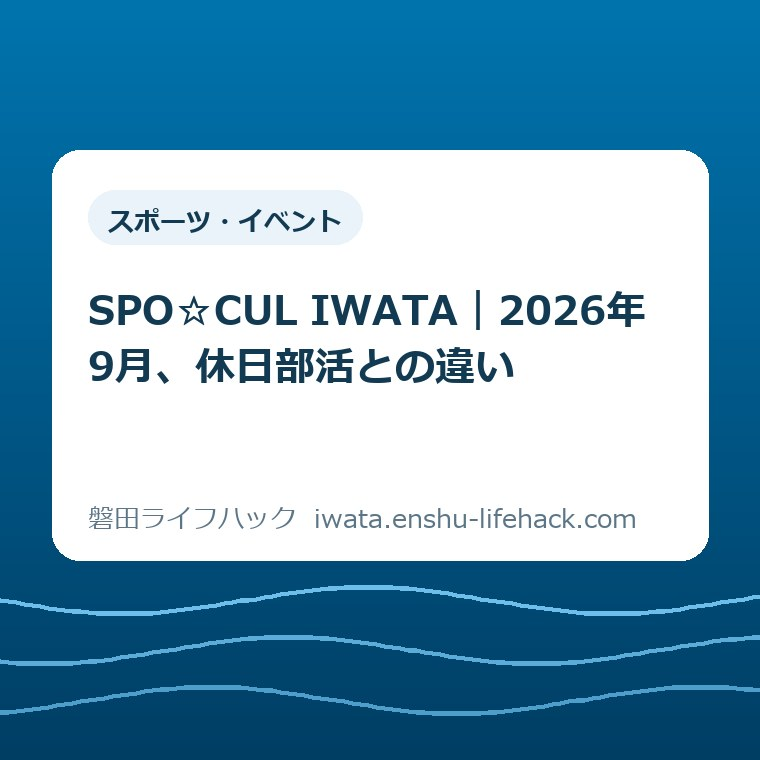

スポーツ・イベント
SPO☆CUL IWATA｜2026年9月、休日部活との違い

この記事の要点
Q. 2026年9月から、休日の部活は何が変わる？
A. 磐田市立中学校では休日の学校部活動を行わず、希望する生徒はSPO☆CUL IWATAへ参加します。平日の学校部活動は残ります。休日週1回の基本参加費は月2,000円で、活動費が別途かかる場合があります。会場への移動は保護者の責任です。
導入——「休日部活がなくなる」だけでは足りない
2026年9月、磐田市立中学校の休日活動が切り替わります。学校が行う部活動ではなく、地域クラブ活動「SPO☆CUL IWATA」に参加する形です。
この説明を聞いても、保護者の疑問は残ります。平日はどうなるのか。月いくらかかるのか。学校と違う場所なら、誰が送るのか。
磐田市が2026年6月22日に更新した「磐田市の部活動改革」と、令和8年3月一部改訂の活動ガイドラインを2026年9月5日に確認しました。
制度の適用や費用、募集状況、会場は、年度やクラブ、生徒の参加回数で変わります。先に全体像をつかみ、最後は必ず磐田市公式ページで各家庭の条件を確認してください。

SPO☆CUL IWATAと学校部活動の違い
SPO☆CUL IWATAは学校管理外の地域クラブ活動です。学校単位で行う部活動とは、運営者、申込み、費用、保険、活動場所への移動責任が違います。
学校部活動は学校教育の一環で、学校の管理下で行われます。SPO☆CUL IWATAは地域団体や個人活動者がクラブを運営し、磐田市教育委員会の担当課が全体事務局を担います。
学校の校区で参加先が固定される仕組みではありません。希望する生徒は校区を越えて種目を選べ、自分の学校になかった種目への参加もできます。
対象は、磐田市立中学校に在籍する生徒、または磐田市内に住む中学生で、参加を希望する生徒です。原則の参加終了は中学3年生の7月末ですが、希望者は卒業まで続けられます。
現在の学校部活動を組み替えたA区分は大会等に参加します。地域から参画したB区分は、大会等に参加しない教室型です。同じ「クラブ」でも目的が違います。
2026年9月からは最大2クラブへ参加できます。A区分とB区分、またはB区分2つの組合せは可能ですがA区分2つには参加できません。
2026年9月に初めて始まるわけではない
SPO☆CUL IWATA自体は2024年5月に始まりました。2026年9月から新しくなるのは、休日の学校部活動を行わない形へ全面的に切り替わる点です。
意外な事実は、「2026年9月から部活動がすべて地域クラブになる」のではないことです。2026年度の夏季大会後も、平日は学校部活動、休日はSPO☆CUL IWATAという二つの枠組みが並びます。
休日に学校の顧問と学校の仲間で練習する形から、希望するクラブの指導者と校区を越えたメンバーで活動する形へ変わります。子どもの人間関係も、家庭の連絡先も変わります。
平日と休日で活動主体が分かれるため、「部活の連絡はすべて学校へ」とは限りません。休日の日程、出欠、中止、迎え依頼は連絡管理システムを使ってやり取りします。
学校の情報と休日クラブの情報を一緒にしないことが、保護者の最初の段取りです。平日の学校側情報は磐田市の小学校・中学校の案内から確認できます。
月額2,000円で終わらない場合を先に見る
SPO☆CUL IWATAの基本参加費は、休日の週1回活動なら月2,000円です。週2回は月3,000円、週3回は月4,000円、週4回は月5,000円とガイドラインに定められています。
週1回のクラブを12か月続けると、基本参加費は年24,000円です。この計算は月2,000円を12倍した目安で、活動費や移動費は含みません。
クラブによっては、用具、消耗品、競技団体への登録、大会参加などの活動費が別途かかります。ユニフォームや楽器、遠征に必要な費用は種目で大きく違います。
2クラブに参加すると、それぞれの参加費と活動費が必要です。日程が重なり一方を欠席しても、欠席分が返金される仕組みではありません。
生徒の都合で1か月すべて休んだ場合や、月の途中で入退会した場合も、原則と1か月分の参加費が必要です。クラブ側の理由で一度も開催できない月は返金対象です。
家計に入れる金額は、月額参加費だけではありません。「クラブ固有の活動費」「年に数回の費用」「会場までの移動費」の三列を家計メモに分けると、見落としを減らせます。
送迎の変化は、「学校まで」から測り直す
SPO☆CUL IWATAの活動場所は、磐田市立の中学校や小学校、社会体育施設、公共施設などです。自分が通う中学校で活動するとは限りません。
活動場所への移動は保護者の責任です。活動ガイドラインは、自転車、公共交通機関、保護者の送迎などを移動方法として示しています。送迎サービスの記載は確認できません。
毎週の送迎は、片道時間だけでは測れません。集合時刻までの待ち時間、終了後の片付け、駐車場への出入り、兄弟姉妹の予定との重なりも含みます。
例えば、学校までは片道10分、クラブ会場までは片道25分と仮定します。差は往復30分で、月4回なら2時間です。これは各家庭で道路と時間帯が違うため、計算例です。
磐田市内でも、見付、福田、竜洋、豊田、豊岡の間の移動は同じではありません。種目が同じでも会場で負担が変わるため、磐田市のスポーツ施設の選び方と会場を照らします。
兄弟姉妹の通園・通学予定も、一枚の予定表に置きます。小学校入学を控えた家庭は、2026年の就学時健康診断の日程と持ち物も同じ家族カレンダーで管理すると、送迎の重複を早く拾えます。

活動時間、休み、保険も学校と分けて見る
SPO☆CUL IWATAの週休日等の活動は3時間程度で、準備と片付けを含め4時間以内です。週休日には少なくとも1日以上の休養日を置く基準です。
8月11日から20日までの10日間と12月29日から1月3日までは、原則として活動しません。長期休暇の家族予定は、この休止期間とクラブ固有の日程を両方確認します。
保険の枠組みも変わります。平日の学校部活動は日本スポーツ振興センターの災害共済給付制度、SPO☆CUL IWATAはスポーツ安全保険の対象です。
SPO☆CUL IWATAの参加生徒と指導者はスポーツ安全保険に加入し、手続きは運営事務局が行います。事故が起きたときは、いつ、どこで、どの活動中だったかをクラブへ伝えます。
休日の日程、出欠、活動中止、迎え依頼は連絡管理システムから通知されます。保護者は登録後に通知を受け取れるか、アプリに希望クラブが表示されるかを確認します。
申込みは「種目名」で決めない
SPO☆CUL IWATAの申込みはWebシステムで希望クラブを選ぶ方式です。毎年度4月に一斉募集し、5月の大型連休後に活動を始め、年度途中も随時受け付けます。
クラブの募集状況は固定ではありません。定員に達したり、募集を停止したりする場合があるため、過去の一覧だけで希望先を決められません。
申込み前に見る項目は、区分、活動曜日、会場、参加費の回数区分、活動費、指定用具、大会への参加有無です。同じ種目名でも、条件が一致するとは限りません。
申込みの詳しい画面操作は、SPO☆CUL IWATA専用ページの最新案内に従います。この記事では申込案内PDFの全操作文を確認できなかったため、未確認のボタン名や画面順を補っていません。
活動場所の条件を見るときは、磐田市のスポーツ施設ガイドも使えます。ただし、公共施設の一般利用とクラブ活動の申込みは別です。
評価——良い点は、選べる種目と指導者の幅
SPO☆CUL IWATAの良い点は、学校と校区に閉じない選択肢ができることです。自校にない種目でも、市内のクラブとして条件が合えば参加できます。
良い点の二つ目は、競技大会を目指すA区分だけでなく、教室型のB区分があることです。大会を目指すか、新しい活動を楽しむかを分けて選べます。
良い点の三つ目は、活動時間、休養日、参加費、保険、指導者の登録などに共通基準があることです。学校外の活動でも、最低限の枠組みを公開資料で確認できます。
休日の指導を学校の教員だけに背負わせず、地域の指導者が担う枠組みにした点も、続けるための一歩です。子どもと指導者の選択肢が地域へ広がります。
評価——注文したい点は、家計と送迎を同じ画面に出すこと
SPO☆CUL IWATAへ注文したい点は、クラブを選ぶ画面で、月額参加費だけでなく活動費、会場、移動時間を横並びで比べられる形にすることです。
名前と種目だけで申し込んだ後に、用具費や送迎の負担がわかるのでは遅いです。保護者がスマートフォンの一画面で総額と移動を見比べられる表示を、一事業者として望みます。
送迎で困る家庭が、子どもの希望を諦めずに済む方法も要ります。相乗りの安全な取り決め、公共交通機関で通える時間設定、同じエリアでの会場調整など、家庭だけに閉じない工夫が欲しいと考えます。
ただし、参加費を抑え、指導者を確保し、多くの種目と会場を同時に組む難しさもあります。市の担当者やクラブの指導者個人を責めても、送迎の30分は減りません。
対案・結論——今日、会場までの往復を1回だけ測る
SPO☆CUL IWATAの参加を考える家庭が今日できる一歩は、希望クラブの会場までの往復時間を、実際の活動曜日と近い時間帯で一度だけ測ることです。
地図の所要時間には、乗降時間、開門待ち、駐車場からの歩きは入りません。会場の入口まで行くと、朝食、仕事、兄弟姉妹の予定と組み合わせられる数字になります。
次に、月額参加費、月あたりの活動費の目安、年間でかかる費用、移動費を別々に書きます。活動費が未確定なら、空欄にせず「クラブへ確認」と残します。
その後で、子どもの希望を聞きます。大会を目指すのか、週1回楽しみたいのか、二つの活動を試したいのか。費用と時間が見えた上でなら、家族の話し合いが「できる・できない」だけで終わりません。
申込み前の確認順
SPO☆CUL IWATAの申込み前は、募集状況とクラブ条件、家計、移動、連絡手段の順に一枚へまとめます。子どもと保護者が同じ条件を見るためです。
- SPO☆CUL IWATA専用ページで、希望クラブの募集中・停止中、A区分・B区分、活動曜日を確認する。
- 月額参加費と活動費、用具費、登録費、大会参加費を分けて聞く。
- 会場の住所を地図で開き、実際の曜日と時間帯の往復を測る。
- 誰が送り、誰が迎え、予定変更時に誰が通知を見るかを決める。
- 申込み完了後、連絡管理システムに希望クラブが表示され、通知が届くかを確認する。
子どもの結論がその日に出なくても構いません。募集状況と費用、会場がわかれば、家族は感覚ではなく条件を並べて考えられます。
大石の視点——家計と段取りが先だ
大石浩之（磐田市／不動産業）としては、理念より先に家計と段取りを見ます。学校で休日部活を行わないからといって、家庭が払うお金と時間が消えるわけではありません。
私の言い切りはこれです。改革の看板より、親が月にいくら払い、誰がどこへ送るかの方が先です。子どもが選べる良さは、家族が続けられる条件と組み合わせてこそ生きます。
私にも、すべてのクラブの追加費用と、各家庭の送迎をどう安定させるかはわかりません。わからないまま「地域に移れば解決する」とも「負担が増えるだけ」とも断定しません。
この記事には、私自身が保護者としてSPO☆CUL IWATAへ申し込んだ体験談は書いていません。体験を作らず、公開資料を不動産業で家族の段取りを考える立場から読んだ意見です。
保護者は、すでに学校からの文書を読み、子どもの希望を聞き、休日の仕事と家事を組み替える手間を払っています。その手間を認めた上で、今日は往復時間を一度測るだけで十分です。
よくある質問
SPO☆CUL IWATAと学校部活動の違いについて、費用と送迎を中心に三つの質問を整理します。回答は2026年9月5日の公開情報に基づきます。
SPO☆CUL IWATAは2026年9月に初めて始まるのですか。
いいえ。SPO☆CUL IWATA自体は2024年5月に始まりました。2026年9月の変化は、磐田市立中学校で休日の学校部活動を行わず、希望者が地域クラブ活動に参加する形へ切り替わることです。平日の学校部活動は残ります。
SPO☆CUL IWATAの月額負担は2,000円だけですか。
休日に週1回参加する基本参加費は月2,000円です。クラブにより用具費、消耗品費、登録費、大会参加費などの活動費が別途必要な場合があります。2クラブに参加する場合は、原則としてそれぞれの参加費と活動費が必要です。
SPO☆CUL IWATAの活動場所までは学校が送迎してくれますか。
磐田市の活動ガイドラインは、活動場所への移動を保護者の責任とし、自転車、公共交通機関、送迎などの方法を示しています。会場は中学校、小学校、社会体育施設などで、クラブごとに異なります。申込み前に実際の会場と移動手段を確認してください。
要点の再確認
2026年9月以降、磐田市立中学校の平日は学校部活動、休日は希望者がSPO☆CUL IWATAに参加します。運営主体と申込み先、費用、保険、移動責任を分けて見る必要があります。
休日週1回の基本参加費は月2,000円ですが、クラブ固有の活動費と会場までの移動費は別に考えます。月額だけで比べず、年の支出と家族の時間に置き換えます。
子どもの希望と家族の条件は、一度で一致しないこともあります。まず会場までの往復時間を測り、次に追加費用をクラブへ聞き、最後に磐田市の最新案内と申込画面で確定してください。
参考にした公式情報
- 磐田市の部活動改革／磐田市（2026年9月5日確認・ページ更新日2026年6月22日）
- 磐田市地域クラブ活動「SPO☆CUL IWATA」活動ガイドライン／磐田市（2026年9月5日確認・令和8年3月一部改訂）
- 「SPO☆CUL IWATA」クラブ運営規程／磐田市（2026年9月5日確認）
- 「SPO☆CUL IWATA」ロードマップ／磐田市（2026年9月5日確認・2026年2月改訂）
- SPO☆CUL IWATA専用ページ（2026年9月5日確認）

最終確認日：2026-09-05 ／ 本記事は公表情報と執筆者の見解を分けて記載しています。参加可否、募集状況、費用、会場は個別条件で変わります。最新・正確な情報は必ず磐田市公式ページでご確認ください。